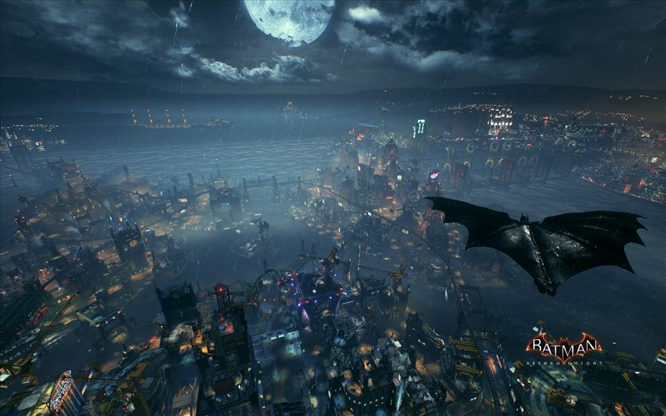

World 12 / Gotham City
Batman: Arkham Knight
Gotham after dark: wet streets, sharp silhouettes, and light caught between buildings.

World 12 / Gotham City
Gotham after dark: wet streets, sharp silhouettes, and light caught between buildings.